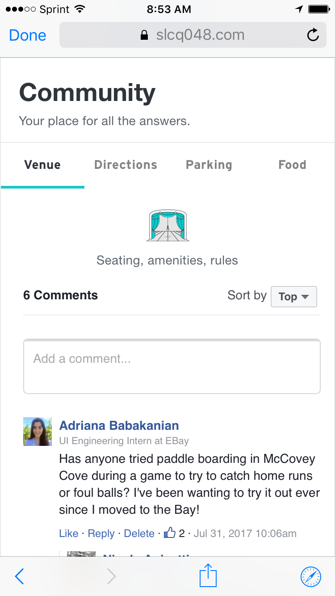
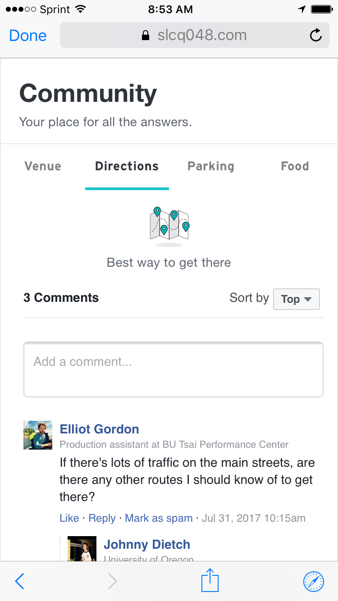

StubHub Community
As an eBay intern during Summer 2017, I worked as a part
of StubHub's Search Infrastructure engineering team. In addition to contributing towards
the SI team by developing for UI engineering stories using the Scrum framework, I also
created and then developed a community platform for StubHub users. The platform aims to
increase engagement on StubHub through a data-oriented approach with impact in customer
service efficiency, partnerships, and search engine optimization.
I used techologies such as internal JavaScript libraries,
Dust,
RequireJS,
Sass, HTML,
and JavaScript, as well as analytics tracking & A/B testing implementation, performance
testing, cross-browser quality assurance, loacalization, and several external SDKs in both
Web and mobile Web.


The main goal of the community feature is to collect user-generated content
and then utilize it to augment the end-to-end user experience. I worked closely
with product designers, user reserchers, analytics teams, customer service
databases, Scrum teams, and more at every step of the pipeline to implement a
method for data collection and utilization as opposed to simply hard-coding a static
platform displaying UGC. I made design and implementation decisions by consulting
data collected across thousands of customer service calls, analyzing the results of
usability testing with external users, and consulting company leaders to receive
feedback based on partnerships and long-term strategy. I also localized all code to
be used across all of StubHub's domains in the United States, Canada, Mexico, Spain,
Germany, and more.
Through this experience in which I regularly wrote and deployed
production-integrated code and pitched my development to high-stake company leaders on
almost a daily basis, I have developed a technical skill set in ideating, producing, and
leading at high efficiency rates.